Carré Sénart 2004
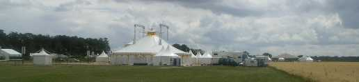
Une rencontre un peu spéciale, la fête du "Carré Sénart". Pour le cerf-volant, c'est sur invitation en liaison avec le club du coin (Cramayailes) mais je connais beaucoup de monde et je ne demande pas de participation aux bénéfices... Le coin est bien plat et venté, en campagne derrière un grand hyper, avec un "grand canal" (voir photo du bas de page) qui permet des animations bien visibles sur et depuis ses berges inclinées à 20°. Une surface herbeuse (au premier plan sur la photo du haut) accueille les cervolistes.

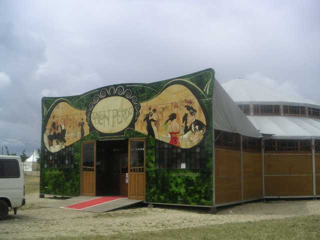
Hors cerf-volant, de nombreux centres d'attraction : le "Magic Mirror", déjà vu sur l'Entonnoir à Berck, tout en bois façon 1900.

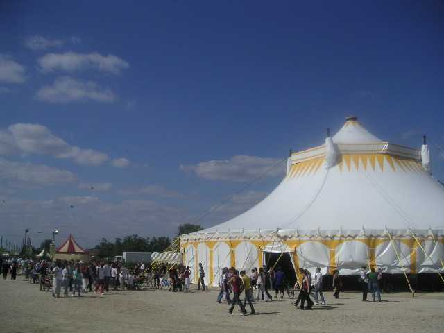
Et puis des cirques, des stands de différentes sociétés (ou sectes ?), religieuses, écologiques ou de loisirs, avec quand même une orientation commune : fournir de la boisson et de la bouffe toute la journée car il y aura du monde (30 000 ?).

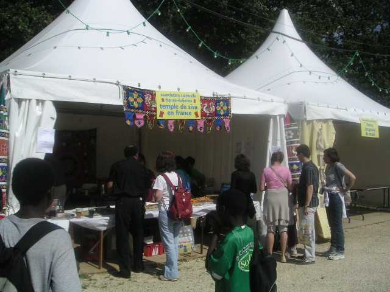

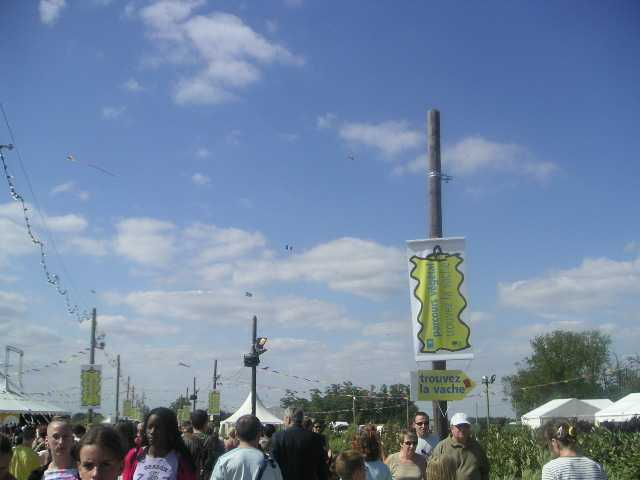

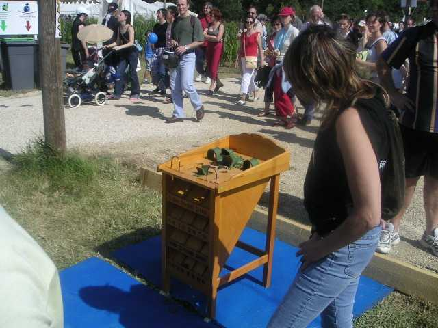
Sur la route des cerfs-volants, beaucoup de monde essaye d'arrêter les spectateurs : des jeux divers remontant du passé comme la grenouille passe-boules,

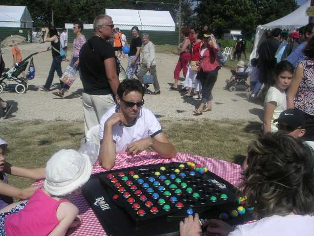
ou conçus par des fous comme nous qui n'ont pas peur de jouer : des jeux complexes...

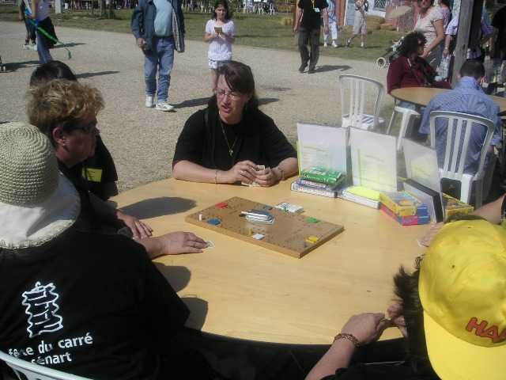
ou qui ont l'air plus simples, mais méfiance !
Pour les petits, il y a encore un

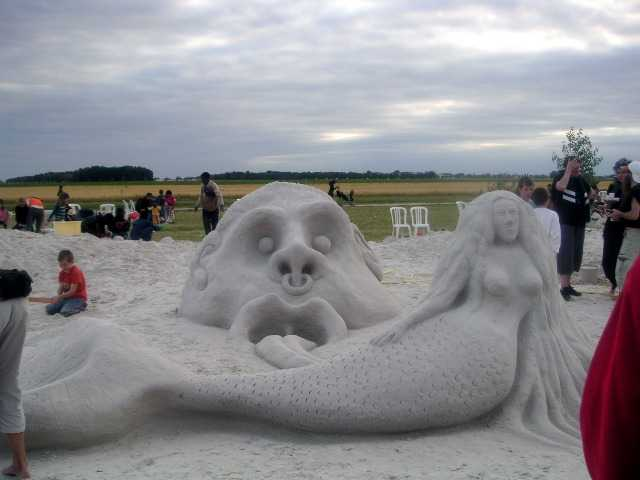
gigantesque et accueillant bac à sable, même s'il est peuplé de monstres inquiétants !

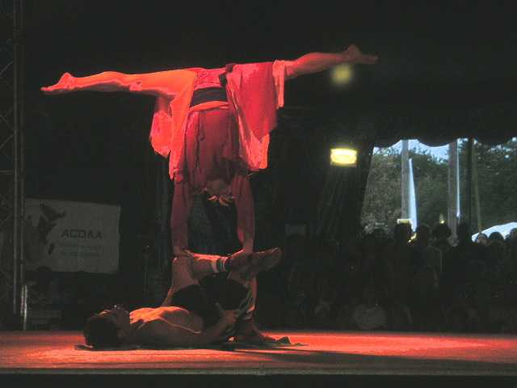
Un deuxième cirque accueille un spectacle intermittent et une restauration argentine (empanadas fourrées...) quasi-permanente.

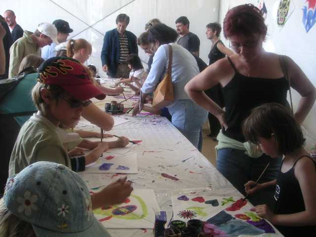
Bon, je reviens au cerf-volant. D'abord, un atelier piloté par Ludo permet la création d'oeuvres immortelles dont certaines ont même duré tout l'après-midi.

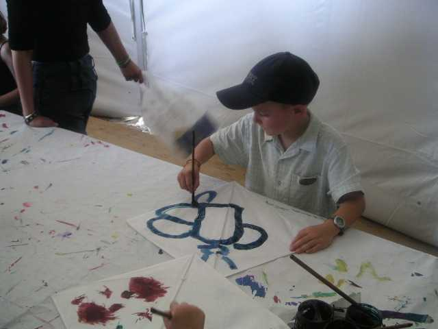

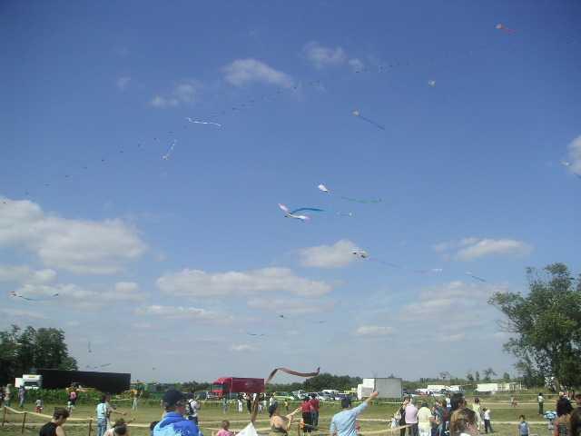
Et puis des cerfs-volants de grands. Ludo a monté son train qui restera toute la journée (le 14, parce que le 10 il a été emporté par la tourmente !).

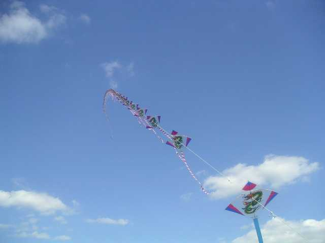

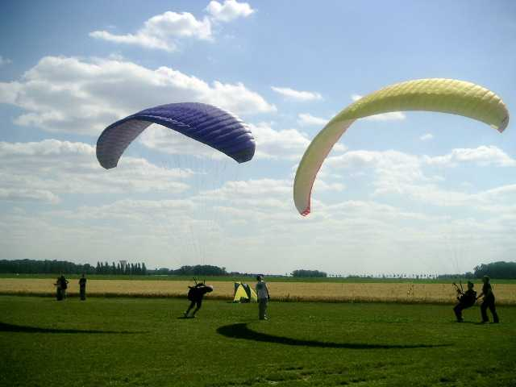
Et encore, de la traction, avec des vrais parapentes. Le vent n'est pas démentiel, on n'a compté qu'un blessé (léger) qui s'est fait traîner par terre jusqu'à ce que ses copains se jettent sur lui. Ben oui, faut pas tomber !

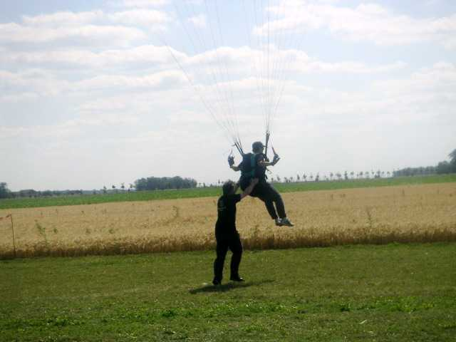
Evidemment, moi, je suis au dessus de tout ça !

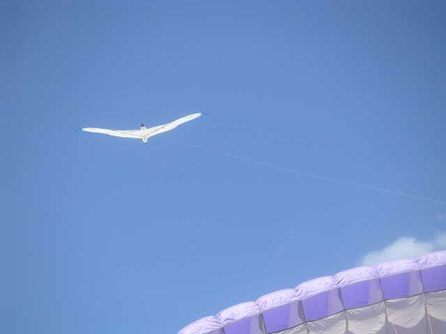

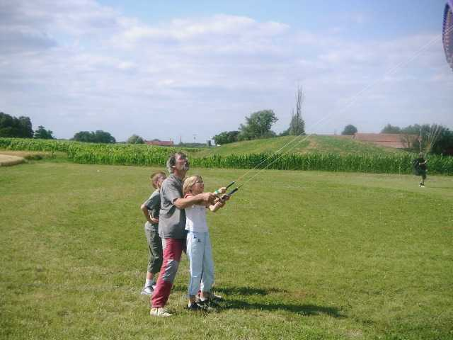
Et puis même une école de pilotable avec plein de jeunes filles (très jeune sur la photo, mais il y a eu moins benjamine...) qui veulent apprendre et plein de moniteurs volontaires...

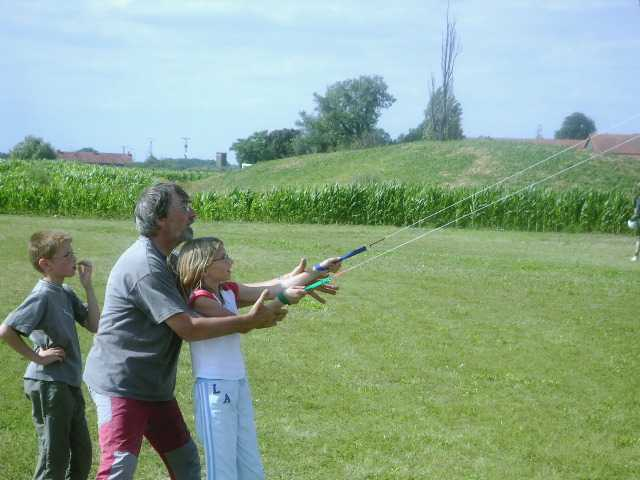
Mais la progression peut être rapide, et certaines reviennent dès qu'une place se libère pour voler encore jusqu'à débuter les carrés, une bonne figure pour progresser dans la prise en main et ne pas faire des ronds toute sa vie !
Enfin, pour couronner la journée, après un grand show à gros effectifs sur les berges du canal, un feu d'artifice comme j'en ai rarement vu, avec un bouquet final à tomber raide (pôvre Logos, caché sous la banquette, les pattes sur les oreilles !).

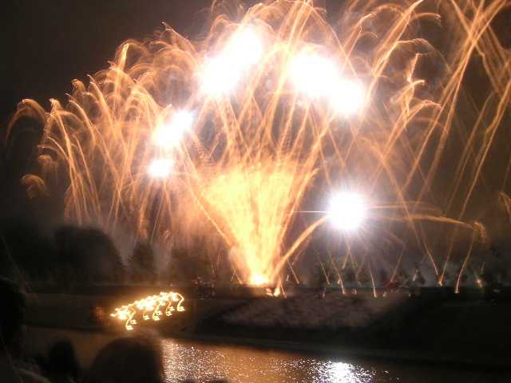